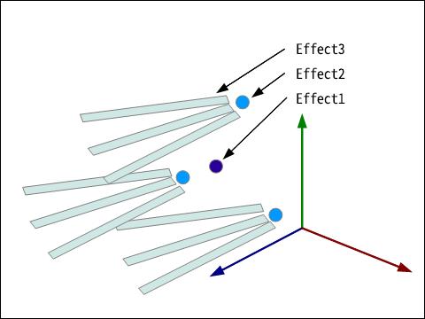
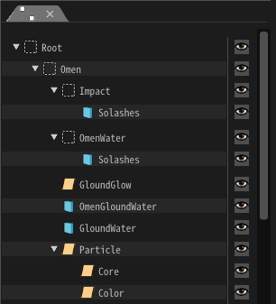

Tool-Reference¶
Overview¶
Tool¶
This tool consists of a viewer section to preview effects and multiple windows to edit the effects' parameters. By editing the parameters in each window, you can create an effect and change its appearance and behavior. By dragging and dropping each window, you can rearrange them as you please, or collapse them into tabs. By selecting "Menu bar -> Window", you can access windows that are not visible in the default view. Also, you can reset all windows back to their default locations.
Effect¶
With this tool, you create an effect by editing nodes. Nodes have parent-child relationships, where children are influenced by their parents. By utilizing the parent-child relationships, it is possible to create complex effects.
I will explain parent-child relationships using an example. In this example, node 2 is the child of node 1, and node 3 is the child of node 2. An effect 1 particle will be generated from node 1. After a few frames, several effect 2 particles will be generated relative to the position of the effect 1 particle generated from node 1. After a few more frames, several effect 3 particles will be generated relative to the positions of each of the node 2 particles. This is shown in the figure below. In this way, by describing the behavior of the effect through parent-child relationships on the nodes, a much greater variety of effects can be expressed. In this tool, one effect generated based on the parameters within a "node" is called a "particle".
How to operate¶
Preview¶
| Rotation | Click the right mouse button and move the mouse while holding. |
| Pan | Click the middle mouse button or right button + Shift and move the mouse while holding. |
| Zoom | Scroll the mouse wheel or right button + Control to zoom in and out. |
How to input a value¶
A value can be entered from the keyboard by left-clicking a text entry box with the mouse.
Left-click and drag a text entry box to change the value gradually.

How to input a color¶
In addition to the text box, the color can be entered by left-clicking the color field with the mouse.

Left-click and drag a color field to copy the value to another color field.
Node Tree¶
In the node tree, you can edit the nodes that compose the effect. You can right-click to add or delete a node.
You can drag & drop nodes to reorder them.
You can click on the eye icon to toggle the display of nodes. You can shift and click at the same time to toggle display, including child nodes.
Panels (Windows)¶
There are very few panels (windows) available for editing the parameters you create for your effects. If you select "Window" from the menu bar, you will see a list of windows that can be displayed. If you select it, the window will appear.
You can move the displayed window by moving it while left-clicking the window's menu bar.
You can also add a window to another panel by overlapping it with the square that appears while moving it.

You can also add to the tabs by dragging and dropping them between the tabs. (If you have a single panel of tab, drag & drop them onto the tab.)

File Format¶
Effect file (efkefc)¶
An effect is saved in a file with "efkefc" format. This file can be editted and played with a runtime in a game.
Until version 1.4, the roles were separated from efkproj for tool editing and efk for game playback. For compatibility, the current version can read efkproj and efk.
Resource file¶
A few resource files referenced by the effect. There are general file formats and Effekseer's own file formats.
| extension | description |
|---|---|
| png | Texture image file |
| wav | Sound wave file |
| efkmat | Material file(Create by Material editor) |
| efkmodel | 3D Model file(Convert from fbx,mqo) |
| efkcurve | Curve parameter file(Convert from fbx) |
Package file (efkpkg)¶
An efkpkg file is a package file that contains one or more efkefc files and various resource files.
When you export, the resource files referenced by the effect are automatically packaged with it. It can be imported and used in another project of yourself or someone else.
Effect parameters¶
Effect features¶
Tool functions¶
Command Line¶
When starting Effekseer from the command line, you can change the behavior of Effekseer by adding arguments. For example, you can convert ".efkproj" files to ".efk" without activating the Effekseer GUI. By combining this with a script, you can batch convert effect files in any folder at once.
-cui |
Start up in CUI mode |
-in * |
* open and launch |
-o * |
Save as * |
-e * |
Output in standard format to * |
-m * |
Set the magnification ratio of the effect when outputting in standard format to * |
--materialcache |
Generate a cache of all materials included in the specified effect |